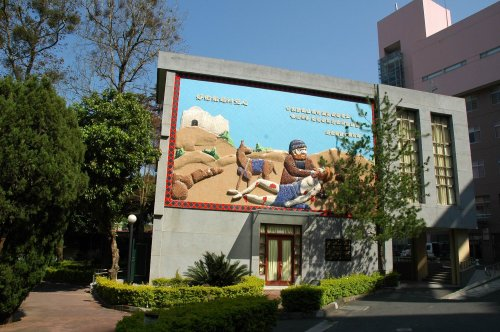

1946年，烏牛欄教會青年與彰基醫師、護士前往霧社醫療、傳道，是埔基的萌芽。
1955年10月，由「芥菜種會」美籍宣教師孫理蓮博士及謝緯醫師共同創辦「基督教山地診所」， 1956年1月16日開幕感恩禮拜。挪威籍宣教師徐賓諾護理師及紀歐惠醫師配搭事奉，與世界展望會協助，於鯉魚潭畔設立肺病療養院，展開埔里醫療宣教。
1960年8月，埔里基督教山地醫院門診大樓完工，是南投縣第一所現代化醫院，象徵原住民醫療新里程碑。
1999年921大地震，舊醫療大樓蒙上帝保守，成為歷史見證，持續大埔里地區醫療傳道。
2002年6月，為建造耐震新醫療大樓，拆除部分舊建築，保留極具意義的舊教堂， 同年10月遷移禮拜，移至小教堂旁，成為埔基院史館。
舊教堂如今靜靜矗立，訴說半世紀山地醫療的愛與奉獻。
「事奉」 含恭敬之意，即存恭敬之心承擔責任，盡當盡的任務。
芥菜種會：孫理蓮宣教士 (1901.1.29－) 出生美國明尼蘇達州。 1927年與孫雅各牧師結婚來台，戰後返台，1952年創立全台第一間社福機構「基督教芥菜種會」， 以「妻子宣教士」角色服務弱勢。